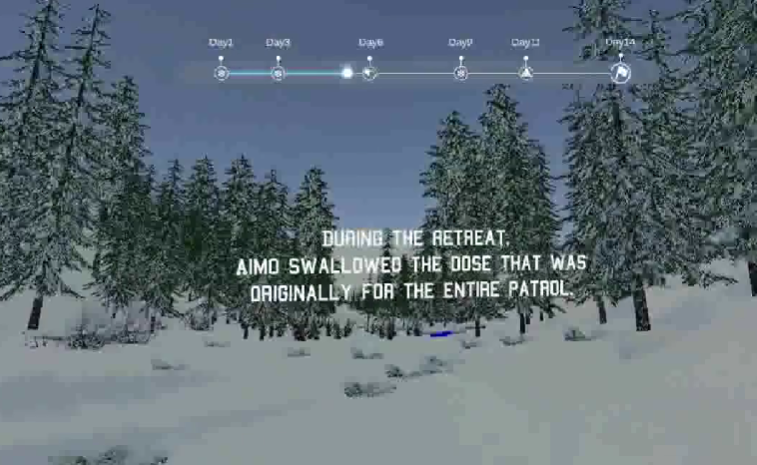

PROJECT 01 / VR EXPERIENCE
奔赴暗夜
RUN INTO DARK
VR SURVIVAL EXPERIENCE
01 / 02
VR 生存体验
奔赴暗夜 Run into Dark
以芬兰士兵 Aimo Koivunen 二战期间滑雪求生的真实故事为灵感，设计一款反战主题的 VR 交互体验，通过滑雪、药丸加速、障碍躲避、昼夜变化、暴风雪以及芬兰语配音和环境音效，呈现战争中的生存困境。我主要负责环境搭建和 UI 设计，同时参与部分 Unity 交互开发与前期调研，利用 AI 工具辅助代码编写与调试，并通过多轮测试优化场景、交互和运行效果。项目完成了 14 天沉浸式体验，并取得课程前 5% 的成绩，获得导师认可，同时荣获多个国际设计赛事奖项。
观看项目视频 ↗